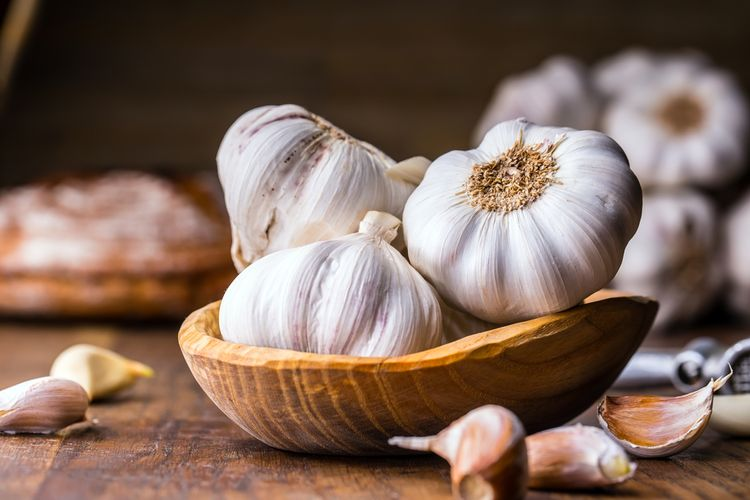
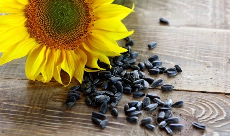
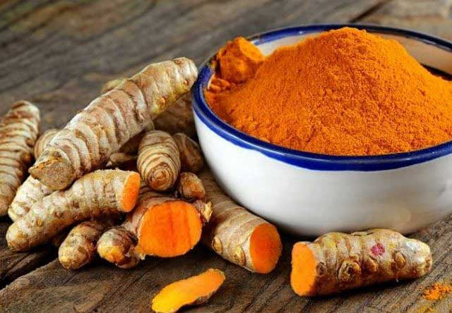
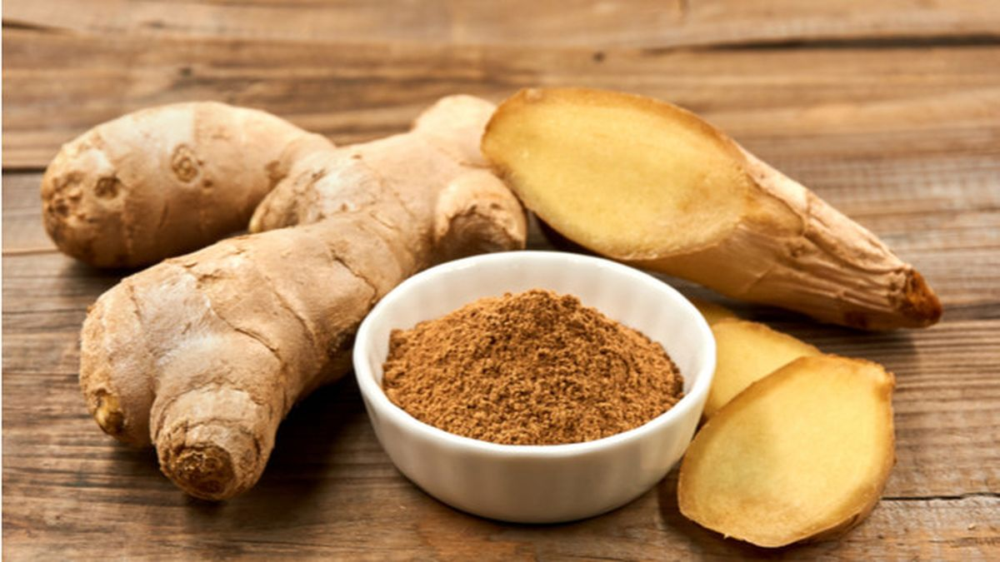
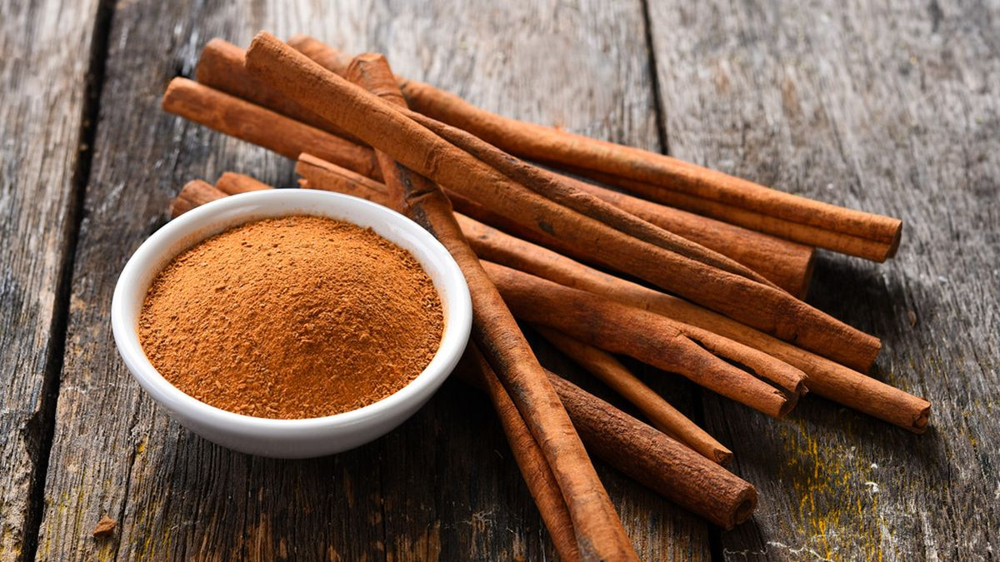

-
Bawang Putih

Untuk mencegah datangnya penyakit covid, anda bisa mengkonsumsi bawang putih sebagai obat herbal. Bawang putih termasuk dalam kategori superfood dan bisa dipakai untuk mengatasi berbagai masalah kesehatan. Bawang putih memiliki kandungan antimikrobakteri, antibiotik, dan antiinflamsi.
Selain itu, bawang putih juga dapat meningkatkan jumlah sel darah putih dalam tubuh. Hal tersebut membuat bawang putih sangat cocok dipakai sebagai obat herbal ditengah pandemi corona. Anda Bisa mengkonsumsi bawang putih dengan menambah jumlahnya dimasakan yang anda makan.
-
Biji Bunga Matahari

Obat herbal selanjutnya adalah biji bunga matahari. Biji bunga matahari juga memiliki kandungan selenium yang dapat dipakai untuk melawan beberapa jenis kanker. Tentu saja dayatahan tubuh juga ikut meningkat karena kandungan itu, sehingga tubuh menjadi lebih siap menghadapi covid.
Antioksidan juga terkandung dalam biji bunga matahari yang mampu melawan zat racun dalam tubuh. Anda bisa mengkonsumsi biji bunga matahari dengan mencampurnya disalad yang anda konsumsi.
-
Kunyit

Curcumin yang terkandung dalam kunyit mampu meningkatkan daya tahan tubuh seseorang. Kandungan itu akan mengaktifkan sel darah putih dalam tubuh, sehingga sisem imun tubuh menjadi bertambah.
-
Jahe

Saat pandemi corona. Anda bisa mengkonsumsi jahe untuk meningkatkan daya tahan tubuh. Sama seperti bawang putih, jahe juga memiliki kandungan antimikrobakteri, antiinflamsi, dan antibiotik.
Antioksidan tinggi yang ada dalam jahe menjadi alasan mengapa sistem imun tubuhbisa meningkat setelah mengkonsumsi obat herbal ini. Anda bisa mencegah infeksi virus covid dengan mengkonsumsi jahe secara rutin. Jahe bisa diolah terlebih dahulu dengan teh atau menggunakannya sebagai bahan masakan tambahan.
-
Kayu Manis

Sejak ribuantahun lalu, kayu manis sudah dipakai sebagai obat herbal untuk menjaga imun tubuh.
Hal tersebut dikaarenakan adanya Antioksidan dalam kayu manis. Selain menjaga daya tahan tubuh ditengah pandemi covid, kayu manis juga bisa anda konsumsi krena memiliki efek anti-diabetes dan mengurangi resiko penakit jantung.